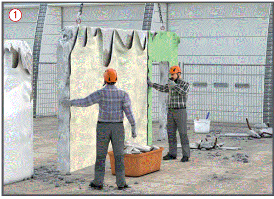
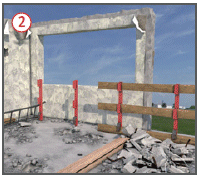
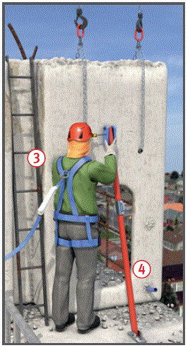

Gefährdungen
- Durch die Verwendung von ungeeigneten Anschlagpunkten der zu demontierenden Bauteile bzw. technischen Anlageteile kann es zu Personen- und Sachschäden kommen.
Allgemeines
- Vorausschauende Planung der Demontagearbeiten.
- Im Vorfeld Sichten der vorhandenen technischen Unterlagen, wie z. B. Bestandspläne.
- Ggf. Hinzuziehung eines Abbruchstatikers zur Festlegung des Demontageverfahrens.
- Erstellung einer Demontageanweisung (Abbruchanweisung) mit allen notwendigen sicherheitstechnischen Angaben.
- Ausführung der Demontagearbeiten nur von erfahrenen und fachlich geeigneten Personen.
Schutzmaßnahmen
- Demontagearbeiten erst dann beginnen, wenn der bauliche Zustand des abzubrechenden Bauwerkes und angrenzender Bauteile in statischer und konstruktiver Hinsicht untersucht ist.
- Standsicherheit und Tragfähigkeit der baulichen und technischen Anlagen während der Demontagearbeiten jederzeit gewährleisten.
- Geeignete Anschlagpunkte festlegen bzw. schaffen.
- Fachlich geeignete Personen (Aufsichtführende) müssen die Demontagearbeiten leiten und beaufsichtigen.
- Art und Zustand der zu demontierenden Bauteile bzw. Anlageteile erkunden.
- Demontageverfahren nach örtlichen Gegebenheiten auswählen.
- Gefahrstoffe, Gebäudeschadstoffe und Biostoffe ermitteln, Arbeitsanweisungen aufstellen und entsprechende Schutzmaßnahmen treffen.
- Bei plötzlich auftretenden Gefahren sind die Arbeiten sofort einzustellen.
- Gegenseitige Gefährdungen vermeiden. Bei den Demontagearbeiten dürfen sich keine unbefugten Personen in dem Gefahrenbereich der zu demontierenden Bau- bzw. Anlagenteile aufhalten.
Demontageanweisung (Abbruchanweisung)
- Die Demontageanweisung muss u. a. Angaben enthalten über:
- konstruktive Besonderheiten,
- gewähltes Demontageverfahren,
- Gewicht der zu demontierenden Bauteile bzw. Anlagenteile,
- Lage der Anschlagpunkte,
- Festlegung der Hebezeuge,
- Standsicherheit der Teile während der einzelnen Demontagezustände,
- Art, Umfang und Reihenfolge der Demontagearbeiten,
- Art und Anzahl der einzusetzenden Geräte und Maschinen,
- Arbeitsplätze und Zugänge,
- Hilfskonstruktionen, erforderliche Gerüste und Aufstiege,
- Schutz der Beschäftigten gegen Absturz,
- Schutzmaßnahmen gegen auftretende Gefahrstoffe.
- Auf eine schriftliche Demontageanweisung kann nur verzichtet werden, wenn besondere sicherheitstechnische Angaben nicht erforderlich sind.

Zusätzliche Hinweise für Arbeitsplätze und Verkehrswege
- Zum Erreichen der Arbeitsplätze sichere Verkehrswege errichten.
- Im Bauwerk vorhandene Treppen und Geländer solange wie möglich erhalten.
- Absturzgefahren, welche durch die Demontage von Bauteilen geschaffen werden, im Vorfeld durch Anbringen von Absturzsicherungen beseitigen
 .
.
- PSA gegen Absturz nur verwenden, wenn Absturzsicherungen (Seitenschutz) aus arbeitstechnischen Gründen nicht möglich sind
 .
.
- Anschlagpunkte für PSA gegen Absturz müssen ausreichend tragfähig sein und müssen durch den Vorgesetzten festgelegt werden.

Zusätzliche Hinweise zum Tragen von persönlichen Schutzausrüstungen
- Bei Demontagearbeiten grundsätzlich Industrieschutzhelme (Kopfschutz), Fußschutz und Schutzhandschuhe tragen.
- Augen- und Gesichtsschutz bei Schneid- und Trenntätigkeiten benutzen.
- Bei Gefährdungen durch Lärm ist Gehörschutz zu tragen.
- Die Benutzung von Persönlichen Schutzausrüstungen gegen Absturz ist nur erlaubt, wenn technische Maßnahmen gegen Absturz nicht möglich sind.
Zusätzliche Hinweise beim Hebezeugbetrieb
- Geeignetes Hebezeug entsprechend des Gewichtes der Einzelteile und der Ausladung des Hebezeuges auswählen.
- Hebezeug (Kran) auf tragfähigen Untergrund abstützen und waagerecht ausrichten, lastverteilende Unterlagen verwenden.
- Einhalten der Sicherheitsabstände im Bereich von Baugrubenböschungen bzw. unverbauten Baugräben.
- Beachten der Sicherheitsabstände zu elektrischen Freileitungen.
- Anschlagpunkte an den zu demontierenden Bau- bzw. Anlageteilen schaffen.
- Sichern von Bau- und Anlageteilen gegen unbeabsichtigtes Umfallen z. B. mit Schrägstützen
 .
.
- Bau- bzw. Anlageteile nicht losreißen, sondern z. B. mit hydraulischen Pressen lösen.
- Lasten nicht über Personen schwenken.
- Gefahrenbereiche großräumig absperren, ggf. Absperrposten vorsehen.
- Einweiser einsetzen, wenn der Kranführer die Last nicht ständig beobachten kann.
- Verständigung des Kranführers mit dem Einweiser durch festgelegte Handzeichen oder Sprechfunk
 .
.
Zusätzliche Hinweise zum Anschlagen von Lasten
- Lasten oberhalb des Schwerpunktes anschlagen. Schwerpunktlage vorher ermitteln.
- Anschlagmittel (Seile, Ketten, Hebebänder) nicht über die zulässige Belastung hinaus beanspruchen.
- Anschlagmittel bestimmungsgemäß verwenden und aufbewahren.
- Traversen für lange, instabile Bauteile verwenden.
- Bei mehrsträngigen Gehängen nur zwei Stränge als tragend annehmen.
- Nur Anschlagmittel mit Sicherheitshaken verwenden.
- Aufenthalt zwischen Last und festen Gegenständen (z. B. Wänden) beim Anheben der demontierten Teile verboten.
- Lasten nicht höher heben als für die Beförderung notwendig.
- Anschlagmittel erst lösen, wenn die Last sicher abgesetzt ist.
- Bauteile zum Anschlagen nur begehen, wenn diese sicher begehbar und mindestens 20 cm breit sind.
- Geeignete Hilfsmittel wie Leitern oder Hebebühnen zum Anschlagen von Lasten benutzen.
- Verbindungen und Anschlüsse von demontierten Bau- und Anlageteilen erst lösen, wenn diese gegen Umkippen bzw. Herabfallen gesichert sind.
Arbeitsmedizinische Vorsorge
- Arbeitsmedizinische Vorsorge nach Ergebnis der Gefährdungsbeurteilung veranlassen (Pflichtvorsorge) oder anbieten (Angebotsvorsorge). Hierzu Beratung durch den Betriebsarzt.
07/2021